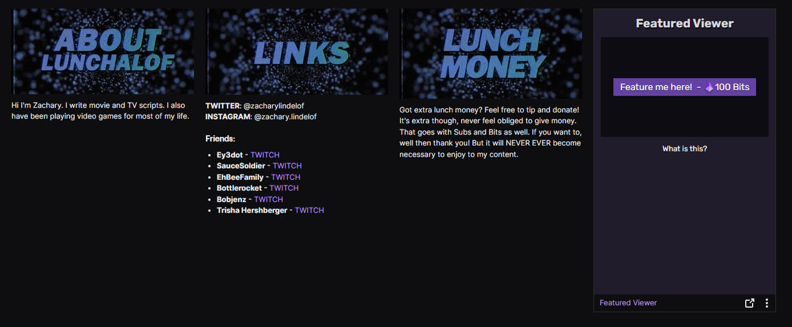
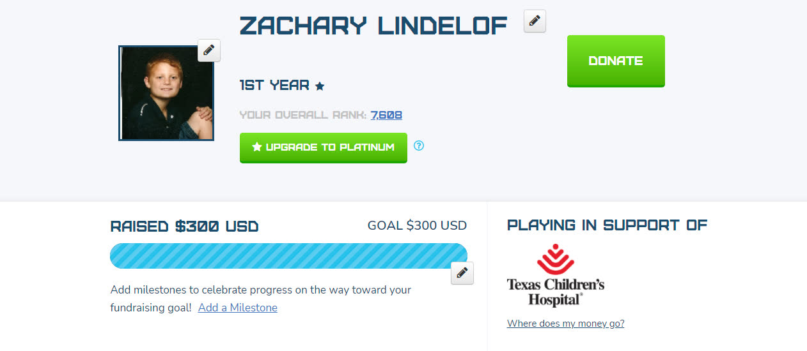

TWITCH STREAMING
Lunchalof Games
Created as a way to combine my love for video games and content creation skills, my Twitch channel is the one place where I can not only relax but try new things out directly for my supporters and friends. I also do charity streams, where I’ve raised over $300 dollars for charity.
Highlights from my Twitch Career include:
- sharing my love for gaming content, usually playing through single-player games with commentary or multiplayer sessions with other creators.
- raising money for Texas Children’s Hospital
- editing highlight reels for other content creators
- streaming games to a subscriber-supported audience
- ad-revenue generated from pre-roll, and post roll ads.
- honestly, it’s all for fun! but it is ready and easily scalable for an organic audience to grow.


Edited for Trisha Hershberger, back in 2016!